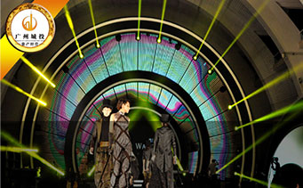

<!doctype html>
<html style="font-size: 50px;">

	<head>
		<meta charset="UTF-8">
		<title></title>
		<meta name="viewport" content="width=device-width,initial-scale=1,minimum-scale=1,maximum-scale=1,user-scalable=no" />
		<link href="../../css/mui.min.css" rel="stylesheet" />
		<link rel="stylesheet" href="../../css/reset.css" />
		<!--<script type="text/javascript" src="../../js/common.js"></script>-->
	</head>
	<style type="text/css">
		.mui-slider {
			margin-bottom: 10px;
		}
		
		.mui-slider-indicator .mui-indicator {
			border-radius: 6px;
			margin-right: 5px;
			margin-left: 0px;
		}
		
		.mui-slider-indicator .mui-indicator.mui-active {
			width: 11px;
		}
		
		.list {
			width: 100%;
			overflow: hidden;
		}
		
		.list .fl {
			margin-right: 2%;
			width: 36%;
			position: relative;
		}
		
		.list .fl img {
			width: 100%;
			height: auto;
		}
		
		.list .fr .title {
			font-size: 14px;
			/*font-weight: bold;*/
			line-height: 14px;
			margin: 8px 0 12px;
			color: #000;
		}
		
		.list .fr .intro {
			font-size: 12px;
			color: #959595;
			text-overflow: ellipsis;
			display: -webkit-box;
			-webkit-line-clamp: 2;
			-webkit-box-orient: vertical;
			overflow: hidden;
		}
		
		.list .fr {
			width: 62%;
			padding-right: 5px;
		}
		
		.list .fl:after {
			content: '';
			height: 1px;
			display: block;
			background: #ccc;
			margin-top: -2px;
			width: 6.4rem;
			left: 105%;
			position: absolute;
		}
		
		body {
			background: #fff;
		}
		
		.placeholder {
			width: 6.4rem;
			height: 3.15rem;
			background: #ccc;
		}
		
		.placeholder p {
			font-size: 16px;
			color: #fff;
		}
		.mui-pull-top-pocket{
			opacity: 0;
		}
		.mui-content{
			background:#fff;
		}
	</style>

	<body>
		<div class="body">
			<script type="text/temp" id="slider_temp">
				{{if data && data.length > 0}}

				<div class="mui-slider-group mui-slider-loop">
					<!-- 额外增加的一个节点(循环轮播：第一个节点是最后一张轮播) -->
					<div class="mui-slider-item mui-slider-item-duplicate">
						<a href="liuhuaintro/liuhua_intro.html?scenery_img_id={{data[data.length-1].scenery_img_id}}">
							
							<!---->
						</a>
					</div>
					{{each data as v,i}}
					<div class="mui-slider-item">
						<a href="liuhuaintro/liuhua_intro.html?scenery_img_id={{v.scenery_img_id}}">
							
							<!---->
						</a>
					</div>
					{{/each}}
					<!-- 额外增加的一个节点(循环轮播：最后一个节点是第一张轮播) -->
					<div class="mui-slider-item mui-slider-item-duplicate">
						<a href="liuhuaintro/liuhua_intro.html?scenery_img_id={{data[0].scenery_img_id}}">
							
							<!---->
						</a>
					</div>
				</div>
				<div class="mui-slider-indicator">

					{{each data as v,i}} {{if i == 0}}
					<div class="mui-indicator mui-active"></div>
					{{else}}
					<div class="mui-indicator"></div>
					{{/if}} {{/each}}

				</div>

				{{else}}
				<div class="placeholder">
					<p>暂无内容</p>
				</div>
				{{/if}}
			</script>
			<div id="pullrefresh" class="mui-content mui-scroll-wrapper" style="top: 44px;;">
				
				<div class="mui-scroll">
					<div class="mui-slider" id="slider">

					</div>
					<!--数据列表-->
					<div class="list_wrap">

					</div>
				</div>
			</div>
			<script src="../../js/mui.min.js"></script>
			<script type="text/javascript" src="../../js/jquery-1.11.2.js"></script>
			<script type="text/javascript" src="../../js/template.js"></script>
			<script type="text/javascript">
				;
				! function() {
					var count = 0;
					var pageIndex = -1;
					var pageSize = 10;
					init();

					function init() {
						mui.init({
							pullRefresh: {
								container: '#pullrefresh',
								down: {
									callback: pulldownRefresh
								},
								up: {
									contentrefresh: '正在加载...',
									callback: pullupRefresh
								}
							}
						});
						get_slider();
						var gallery = mui('.mui-slider');
						gallery.slider({
							interval: 2000 //自动轮播周期，若为0则不自动播放，默认为0；
						});
						get_list();
						aEvent();

					}

					function get_list() {
						pageIndex++;
						
						var url = 'http://120.77.49.17:8080/liuhua/app/SpotsPage/showCitySpots.do';
						$.ajax({
								type: "post",
								url: url,
								data: "{'pageIndex':" + pageIndex*pageSize + ",'pageSize':" + pageSize + "}",
								contentType: 'application/json;charset=UTF-8',
								async: false
							})
							.success(function(result) {
								
								console.log(result);
								if(result.data.length == 0){
									count = 1;
								}
								fill_list(result);

							})
							.fail(function() {
								location.href = '../../error.html';
							});
					}

					function fill_list(result) {
						for(var i = 0; i < result.data.length; i++) {
							var domNode =
								'<a href="view_detail.html?scenery_id='+result.data[i].scenery_id+'">' +
								'<ul class="list clear">' +
								'<li class="fl"></li>' +
								'<li class="fr">' +
								'<p class="title">'+result.data[i].title+'</p>' +
								'<p class="intro">'+result.data[i].subhead+'</p>' +
								'</li>' +
								'</ul>' +
								'</a>';
							$('.list_wrap').append(domNode);
						}
					}

					function get_slider() {
						var url = 'http://120.77.49.17:8080/liuhua/app/SpotsPage/getSceneryImgList.do';
						$.ajax({
								type: "post",
								url: url,
								data: "{}",
								contentType: 'application/json;charset=UTF-8',
								async: false
							})
							.success(function(result) {
								
								var html = template('slider_temp', result);
								$('.mui-slider').html(html);
								//							console.log(result);
							})
							.fail(function() {
								location.href = '../../error.html';
							});
					}

					/**
					 * 上拉加载具体业务实现
					 */
					function pullupRefresh() {
						setTimeout(function() {
							get_list();
							mui('#pullrefresh').pullRefresh().endPullupToRefresh((count)); //参数为true代表没有更多数据了。

						}, 1500);
					}

					function pulldownRefresh() {
						setTimeout(function() {
							mui('#pullrefresh').pullRefresh().endPulldownToRefresh();

						}, 15);
					}

					function aEvent() {
						mui('.list_wrap').on('tap', 'a', function() {
							location.href = $(this).attr('href');
						})
					}

				}();
			</script>
	</body>
	</div>

</html>